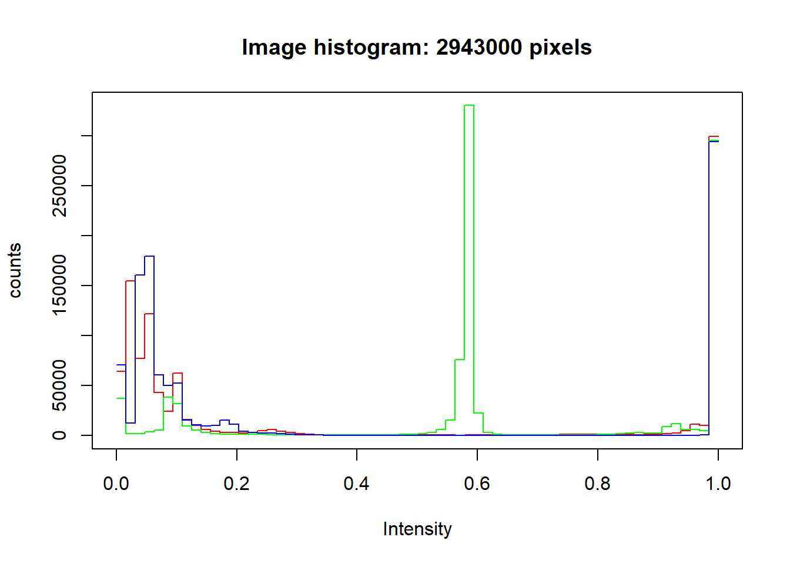
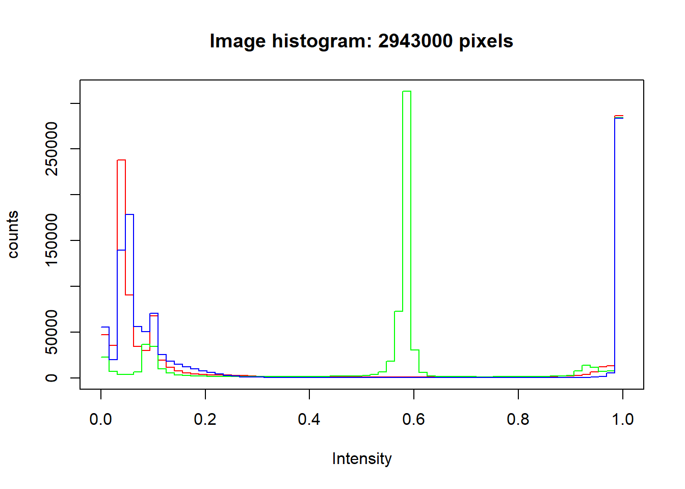

Galan Ramadan Harya Galib
26 April 2021
Seperti biasa untuk pertama-tama kita harus set lokasi kerja dari Markdown kita terlebih dahulu.
setwd("C:/Users/glnrmdan/Documents/R/Watermarking")
library(EBImage)Lakukan Reading Image terhadap gambar yang sudah kita siapkan sebelumnya. Disini saya menggunakan gambar Logo UIN Malang yang kemudian saya simpan kedalam dataset yang bernama img1.
img1 <- readImage('Logo.jpg')
display(img1, method="raster")print(img1)## Image
## colorMode : Color
## storage.mode : double
## dim : 1000 981 3
## frames.total : 3
## frames.render: 1
##
## imageData(object)[1:5,1:6,1]
## [,1] [,2] [,3] [,4] [,5] [,6]
## [1,] 1 1 1 1 1 1
## [2,] 1 1 1 1 1 1
## [3,] 1 1 1 1 1 1
## [4,] 1 1 1 1 1 1
## [5,] 1 1 1 1 1 1
Setelah melakukan Reading Image kita mulai proses Watermarking Digital. Berikan text kedalam logo tersebut lalu simpan menjadi gambar baru. Disini saya simpan gambar yang telah diberi text dengan nama “relogo.jpg”
display(img1, method="raster")
text(x = 850, y = 810, label = "Logo", adj = c(2,2), col = "#00964A", cex = 3)
text(x = 855, y = 815, label = "Logoo", adj = c(2,2), col = "#00964A", cex = 3)
text(x = 860, y = 820, label = "Logooo", adj = c(2,2), col = "#00964A", cex = 3)colorMode(img1) = Color
filename = "relogo.jpg"
dev.print(jpeg, filename = filename, width = dim(img1)[1], height = dim(img1)[2])## png
## 2Lalu kita tampilkan gambar yang sudah diberi watermark tadi.
img2 <- readImage('relogo.jpg')
display(img2, method="raster")print(img2)## Image
## colorMode : Color
## storage.mode : double
## dim : 1000 981 3
## frames.total : 3
## frames.render: 1
##
## imageData(object)[1:5,1:6,1]
## [,1] [,2] [,3] [,4] [,5] [,6]
## [1,] 1 1 1 1 1 1
## [2,] 1 1 1 1 1 1
## [3,] 1 1 1 1 1 1
## [4,] 1 1 1 1 1 1
## [5,] 1 1 1 1 1 1Sebagai pembuktian pertama mari kita lihat lingkaran merah yang ada dibawah kanan tersebut. Didalam tanda lingkaran kanan tersebutlah letah dari tulisan watermark kita.
img3 <- readImage('logomarked.jpg')
display(img3, method="raster")Selanjutnya mari kita buktikan dengan menggunakan historgram. Tampak data dari kedua histogram antara “img1” dan “img2” memiliki tinggi yang berbeda. Ini artinya intesitas warna didalam pikselnya juga berbeda
hist(img1)
hist(img2)
Untuk lebih detailnya kita bisa juga buktikan dengan menampilkan matrix untuk membandingkan numeric pixel dari gambar yang belum dan sudah diberi watermark.
img1_data <- as.numeric(img1)
img1_data[497:505]## [1] 0.8941176 0.6156863 0.6352941 0.6509804 0.6627451 0.6627451 0.6627451
## [8] 0.9294118 1.0000000img2_data <- as.numeric(img2)
img2_data[497:505]## [1] 0.9333333 0.7254902 0.6039216 0.6509804 0.6745098 0.6313725 0.6627451
## [8] 0.7686275 0.9490196Dapat dilihat diatas bahwa matrix dari kedua gambar berbeda.
Dan ini adalah matrix yang versi lebih panjang. Sebenarnya matrix ini memiliki hingga mencapai 100.000 baris, namun hanya ditampilkan beberapa baris saja disini agar websitenya tidak terlalu panjang. Nanti kalian bisa mencobanya sendiri di R console kalian untuk melihat seberapa panjang matrix dari suatu gambar.
Data Matrix Gambar 1
img1_data[450:550]## [1] 1.0000000 1.0000000 1.0000000 1.0000000 1.0000000 1.0000000 1.0000000
## [8] 1.0000000 1.0000000 1.0000000 1.0000000 1.0000000 1.0000000 1.0000000
## [15] 1.0000000 1.0000000 1.0000000 1.0000000 1.0000000 1.0000000 1.0000000
## [22] 1.0000000 1.0000000 1.0000000 1.0000000 1.0000000 0.9960784 1.0000000
## [29] 1.0000000 1.0000000 1.0000000 1.0000000 1.0000000 1.0000000 1.0000000
## [36] 1.0000000 1.0000000 1.0000000 1.0000000 1.0000000 1.0000000 1.0000000
## [43] 1.0000000 1.0000000 1.0000000 1.0000000 1.0000000 0.8941176 0.6156863
## [50] 0.6352941 0.6509804 0.6627451 0.6627451 0.6627451 0.9294118 1.0000000
## [57] 0.9960784 1.0000000 1.0000000 0.9960784 0.9960784 1.0000000 1.0000000
## [64] 0.9960784 1.0000000 1.0000000 1.0000000 1.0000000 1.0000000 1.0000000
## [71] 1.0000000 1.0000000 1.0000000 1.0000000 1.0000000 1.0000000 1.0000000
## [78] 1.0000000 1.0000000 1.0000000 1.0000000 1.0000000 1.0000000 1.0000000
## [85] 1.0000000 1.0000000 1.0000000 1.0000000 1.0000000 1.0000000 1.0000000
## [92] 1.0000000 1.0000000 1.0000000 1.0000000 1.0000000 1.0000000 1.0000000
## [99] 1.0000000 1.0000000 1.0000000
Data Matrix Gambar 2
img2_data[450:550]## [1] 1.0000000 1.0000000 1.0000000 1.0000000 1.0000000 1.0000000 1.0000000
## [8] 1.0000000 1.0000000 1.0000000 1.0000000 1.0000000 1.0000000 1.0000000
## [15] 1.0000000 1.0000000 1.0000000 1.0000000 1.0000000 1.0000000 1.0000000
## [22] 1.0000000 1.0000000 1.0000000 1.0000000 0.9882353 0.9882353 0.9921569
## [29] 0.9960784 0.9960784 0.9882353 1.0000000 0.9960784 1.0000000 1.0000000
## [36] 1.0000000 0.9725490 0.9921569 1.0000000 0.9960784 0.9882353 1.0000000
## [43] 1.0000000 1.0000000 1.0000000 1.0000000 1.0000000 0.9333333 0.7254902
## [50] 0.6039216 0.6509804 0.6745098 0.6313725 0.6627451 0.7686275 0.9490196
## [57] 0.9882353 1.0000000 1.0000000 1.0000000 1.0000000 1.0000000 1.0000000
## [64] 1.0000000 0.9921569 0.9803922 0.9921569 1.0000000 1.0000000 1.0000000
## [71] 1.0000000 1.0000000 1.0000000 1.0000000 1.0000000 1.0000000 1.0000000
## [78] 1.0000000 0.9960784 1.0000000 1.0000000 1.0000000 1.0000000 1.0000000
## [85] 1.0000000 1.0000000 1.0000000 1.0000000 1.0000000 1.0000000 1.0000000
## [92] 1.0000000 1.0000000 1.0000000 1.0000000 1.0000000 1.0000000 1.0000000
## [99] 1.0000000 1.0000000 1.0000000